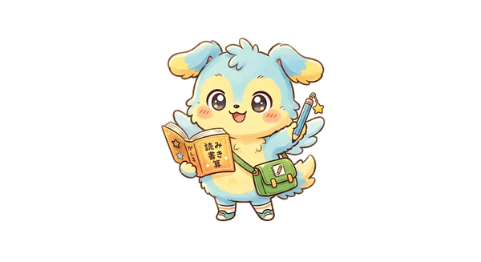

✨ ANRINOの問題アプリ ✨
塾を選んでね！
🏝
島へいく
タップして島へ
コロンのそらとび
きょう 100もん といたら あそべる

📚
ena
えな
⭐
栄光
えいこう
🎒
2年生
ゆうせい
🏗️
建築
けんちく
🔤
英語
えいご
データ引き継ぎ
📦 データ引き継ぎ
① エクスポート（コードをコピー）
② インポート
閉じる
✨ ANRINOの問題アプリ ✨
月を選んでスタート！
📈 ガクハン成績グラフ
📝 4科演習 成績グラフ
🎯 合格判定模試 成績グラフ
📺 ずんだもん動画
📈 成績グラフ
⚔️ やくすうバトル（やくすう・こうやくすう）
📄 チラシ集（おぼえたいこと1枚）
📖 コレクション図鑑
◀ 塾選択に戻る
💌 保護者へのメッセージ
だれが送る？
🐰 りの
🌸 あんり
🎒 ゆうせい
きょうのひとことを選んでね！
📤 送信する
キャンセル
🌙 きょうの アドバイス
おうちの人にも とどいたよ
わかった！
保存する ✨
キャンセル
◀ 月選択
▶ エナベース
🏝
島へいく
コロンのそらとび
きょう 100もん といたら あそべる
📝 合格判定模試（苦手20問）
🌟 全問題にチャレンジ！
📊 きみの傾向を見る
📤 保護者に成績を送る
⚠️ 苦手問題を復習
⭐ もう完璧 0問
🔥 超苦手 0問
🎤 AIケンケンと英会話練習
🏆 正答率
✕ とじる
‹ もどる
✏️ 計算メモ（自由に書いてOK）
⬍
▾
🗑️
⭐ もう完璧にする
📝 メモ（AIで分かったことを書いてね）
← 前の問題
次の問題へ →
🤖 AIにもっと詳しく聞く
🤖 AIの説明
✕
▶ 解説動画
✕
◀ もどる
📺 ずんだもん動画
「ずんだもんと学ぶ中学受験」の動画だけ見られるよ
◀ もどる
📊 きみの傾向
--%
まだ問題を解いていないよ！
📚 教科別の正答率
⚠️ 苦手なところ
⭐ 得意なところ
🌸 ANRINOの学習レポート
📊 総合正答率
--%
📚 教科別の成績
🗓 この2週間
0
⭐ 完璧な問題
0
🔥 超苦手な問題
0
解いた問題数
※ このページはANRINOの学習データのスナップショットです
🎉 1周クリア！
タップで閉じる
◀ もどる
🌙 月うさぎルナ
📖 せいちょう図鑑
⭐ 単元べつの「もう完璧」
⚠️ 苦手問題を復習
🔥 超苦手を集中練習
◀ もどる
📖 コレクション図鑑
🐾 キャラ図鑑
🥇 メダル
アンリノメダル ゲット！
🪙
タップしてとじる
🌙 レベルアップ！
タップで閉じる
結果
正答率
✨ 分野別スコア
🔄 もう一度
⚠️ 間違えた問題を復習
🏠 ホームへ
🤖 AIケンケン 英会話
✕ 終わる